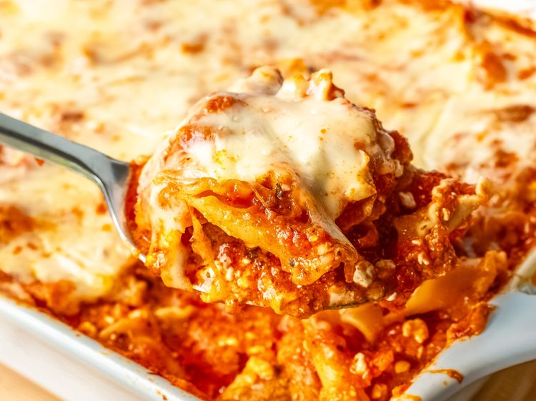

Home
Lazy Dump Lasagne

Ingredients
- cooking spray
- 12 ounces dry pasta, such as mafalda, egg noodles, campanelle, farfalle, or orecchiette
- 28 ounces good-quality marinara sauce
- 1 1/4 cups beef bone broth
- 1 teaspoon Cantanzaro herbs or Italian herbs
- 1 teaspoon granulated garlic
- 12 ounces cottage cheese
- 12 ounces frozen mini meatballs
- 8 ounces pre-cooked sausage
- 1/3 cup pearlini mozzarella cheese (optional)
- 1/2 cup Parmesan cheese
- 2 cups shredded mozzarella cheese, divided
Steps
- Preheat the oven to 350 degrees F (180 degrees C). Lightly grease a 9x13 or similarly sized casserole dish with nonstick spray.
- Stir pasta, marinara, bone broth, Cantanzaro herbs, granulated garlic, cottage cheese, meatballs, sausage, pearlini fresh mozzarella, Parmesan, and 1 cup shredded mozzarella together in a large bowl; pour into the casserole dish and top with remaining 1 cup shredded mozzarella.
- Tightly cover casserole with foil.
- Bake in the preheated oven for 50 minutes; remove foil and bake until cheese is golden and melted, about 15 minutes more. Enjoy!